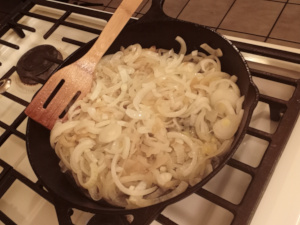
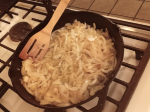
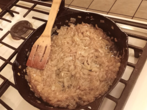

Home
Prep Onions
Equipment
How to Use
The Recipes
Novice
Advanced
Expert
Caramelized Onions: Advanced (Cast Iron Pan)

Placeholder
After 25 minutes

After 50 minutes

After 80 minutes
Ingredients
3 lbs onions, yellow preferred
1/4 cup canola oil, more if you want extra oil for other recipes
1/4 teaspoon salt
Instructions
After prepping your onions, turn heat to medium-high and add the oil. Add about half of the onions along with the salt and stir well for about 10 seconds. Now add the rest of the onions and stir again until they are well coated in oil and salt.
Cover the pan, leaving the lid askew. Turn the heat down to medium low, and cook for 25 minutes.
After 25 minutes, carefully remove the lid to avoid the steam. Stir the onions well, turn heat to low.
NOTE: The onions will most likely have begun to brown, but if not, don't worry. They will soon. Cook, uncovered and undisturbed, for another 15 minutes.
Now begin stirring the onions roughly every 5 minutes. If you don't see any noticable color change, then just add a few minutes. If the color drastically darkens after 5 minutes, then lower the heat. Do this 4 times, for a total of about 20 minutes.
The onions should be much darker by now. Stir them again, then pull a few out of the pan and allow them to cool. Taste the cooled onions. If you enjoy the flavor then you can stop here. If you'd like a stronger flavor with a darker appearance, continue cooking, stirring, and tasting at 5 minutes intervals at the same heat level, just like in the step above. You can continue cooking this way for a long while, until the onions are almost as dark as chocolate.
NOTE: The longer the onions are carmelized, the more they develop an almost nutty flavor. Many people love that flavor, so please experiment. As I am not fond of that flavor, I finished cooking mine after an extra 10 minutes.